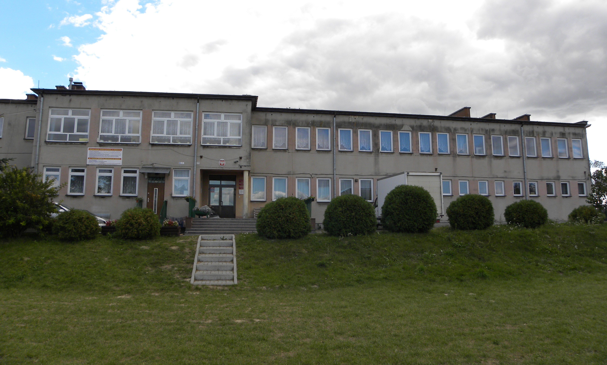
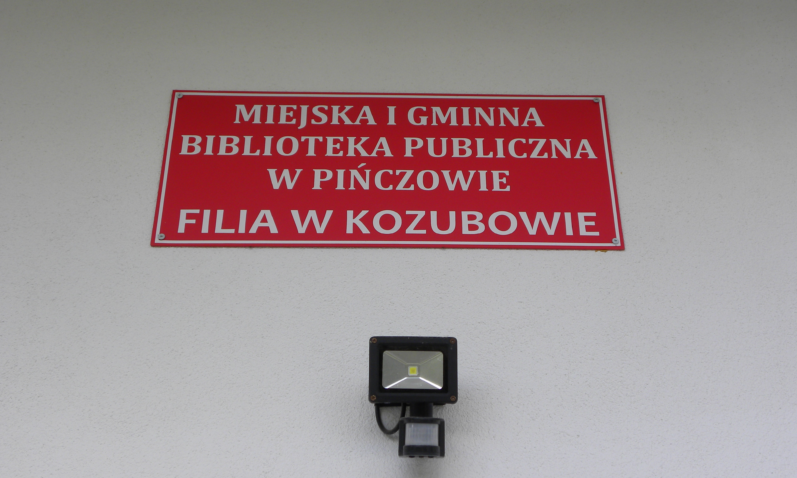
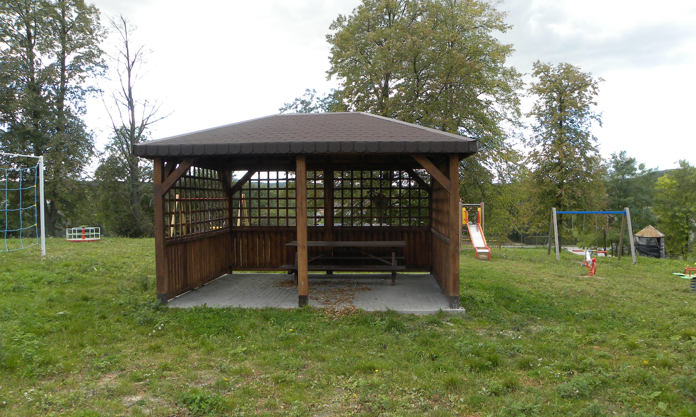
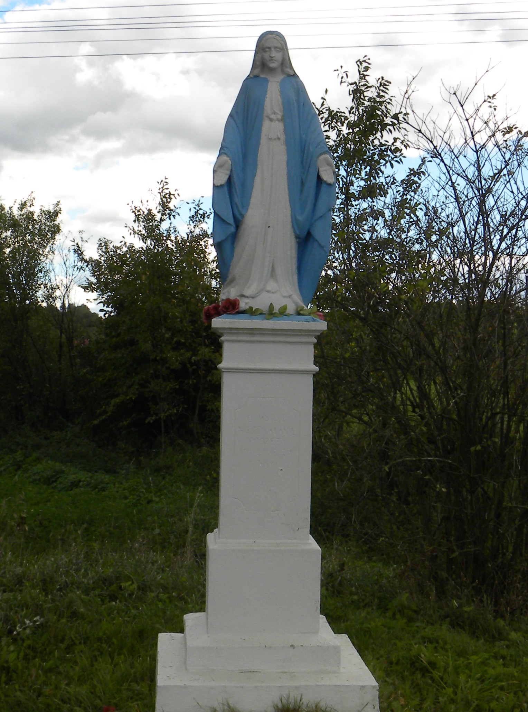

Kozubów to niewielka wieś położona w województwie świętokrzyskim, w powiecie pińczowskim, w gminie
Pińczów.
Miejscowość w latach 1975-1998 należała do województwa kieleckiego.
W skład miejscowości administracyjnie wchodzi 5 części: Nowa Wieś, Mozgawa, Serwit, Podwale, Teresów.
Nazwa
Nazwa wywodzi się od staropolskiego imienia Kozub. Określenie to oznaczało zarówno starca, jak i stare zwierzę.
Symbol wsi
W latach powojennych we wsi Kozubów było 5 Kołchozów. Stąd wziął się symbol tej miejscowości, którym jest koza,
ponieważ kozy mieszkańców nosiły na swoich szyjach karteczki z napisem „Nawet stara koza nie chce już kouchoza”
Historia
Wieś istniała już za czasów Władysława Łokietka, co ma potwierdzenie w pochodzących z tego okresu dokumentach.W
1784 r. miejscowość administracyjnie należąca do powiatu wiślickiego w województwie sandomierskim, wchodziła w
skład własności Ordynacji Pińczowskiej
Bitwy
Nieopodal miejsca, w którym znajduje się pomnik partyzanckiej Republiki Pińczowskiej, doszło do jednego ze
starć insurekcji kościuszkowskiej. (25 marca 1794 roku), czyli zaledwie kilkanaście godzin po krakowskiej
przysiędze Tadeusza Kościuszki, doszło do pierwszego zbrojnego starcia wojsk insurekcji. W miejscowym dworze
zatrzymał się na noc ok. 300-osobowy oddział ppłk. Piotra Łykoszyna,idący z Krakowa na Radom. Z rozkazu Naczelnika
został zaatakowany przez żołnierzy garnizonu pińczowskiego (II Małopolska Brygada Kawalerii) pod dowództwem
Ludwika Magneta. Jednak źle przeprowadzony atak spowodował wycofanie się Rosjan ze wsi i przeniesienie ciężaru
bitwy na drogę wiślicką. Straty poniosły wówczas obie walczące strony. Bardzo ucierpieli też okoliczni mieszkańcy.
W czerwcu 1943 roku na polach pod Kozubowem doszło do kilkugodzinnej potyczki oddziału Gwardii Ludowej im.
Bartosza Głowackiego z hitlerowcami.
Pomnik partyzanckiej Republiki Pińczowskiej
U stóp Góry Byczkowskiej znajduje się pomnik partyzanckiej Republiki Pińczowskiej. W ścianie bocznej jest wyryty
napis: „Partyzantom bohaterom tej ziemi. Partyzancka Republika Pińczowska 24 VII – 15 VIII 1944.” Obok umieszczono
tablice upamiętniające m.in. płk. dr Zygmunta Bieszczanina oraz dowódców partyzanckich zgrupowań AL, AK, BCh i
uczestników walk z niemieckim okupantem, twórcom powstania i utrzymania Republiki Pińczowskiej. Pomnik stanowi
symbol zrywu niepodległościowego z 1944 roku, a upamiętnia partyzantów ziemi pińczowskiej biorących w nim udział.
Uroczystego odsłonięcia monumentu dokonano w sierpniu 1969 r.
Pomnik Republiki PińczowskiejPomnik Republiki PińczowskiejPomnik Republiki Pińczowskiej
Kozubowski park krajobrazowy
Podstawowe Informacje
Data utworzenia parku: 19 grudnia 1986r.
Powierzchnia parku:6.169,6 ha
Powierzchnia otuliny:6.592 ha
Położenie administracyjne:
województwo:świętokrzyskie
powiaty:pińczowski, kazimierski
miasta i gminy:Pińczów, Czarnocin, Działoszyce, Michałów, Złota
Spośród wielu gatunków chronionych w parku należy wymienić przede wszystkim takie gatunki flory jak: miłek
wiosenny, len złocisty, podkolan biały, obuwik pospolity oraz groszek pannoński z jedynym stanowiskiem w Polsce
(Polana Polichno). Z fauny na uwagę zasługuje tu na pewno gniewosz plamisty i jelonek rogacz. Park cechuje także
ciekawa rzeźba terenu ze wzniesieniami lessowymi, dolinami rzek oraz wąwozami.
Na terenie parku znajdują się też wąwozy lessowe.
Góra Byczowska to spaniałe miejsce do podziwiania Kozubowa oraz jego pobliskich terenów z góry.
TabliczkaWidoki nr 1Widoki nr 2Widoki nr 3Widoki nr 4Widoki nr 5Widoki nr 6Widoki nr 7Widoki nr 8Widoki nr 9Widoki nr 10Widoki nr 11Widoki nr 12Wąwóz nr 1Wąwóz nr 2Wąwóz nr 3
Szkoła podstawowa
Szkoła istnieje od roku 1864. Skupia dzieci z Kozubowa, Zawarży, Zagorzyc, Byczowa, Aleksandrowa, Sadku,
Orkanowa, Marianowa. Znajduje się tu 8 klas i oddział przedszkolny. To niewielka placówka, położona w sąsiedztwie
zielonych terenów. Przy szkole znajdują się boiska do piłki nożnej, siatkówki i koszykówki. Wokół placówka otoczona
jest zielenią
Boisko do koszykówkiBoisko do piłki nożnej

BudynekOgród
Biblioteka i Świetlica wiejska w Kozubowie
Jest to Miejsce znajdujące się w centrum miejscowości skupiające ludzi z pasją.
W budynku znajduje się świetlica oraz biblioteka.
Działa tutaj Koło Gospodyń Wiejskich.
Na terenie obiektu znajduje się nowo wybudowana altanka, plac zabaw oraz mini siłownia pod chmurką. blisko
obiektu znajduje się też boisko do piłki nożnej.
Biblioteka

Biblioteka - zbliżenie na tabliczkęWnętrze bibliotekiWnętrze biblioteki

Otoczenie bibliotekiOtoczenie biblioteki
Ochotnicza straż pożarna
Działa tutaj jednostka ochotniczej straży pożarnej, w której czynnie działają mieszkańcy Kozubowa oraz
okolicznych wsi. Strażacy z jednostki uczestniczą w zawodach sprawnościowych, jeżdżą na kursy przygotowujące do
udziału w akcjach pożarniczych, zabezpieczają różne wydarzenia społeczne np. Bieg Kamienia i Mięty. Budynek straży
jest również udostępniany mieszkańcom do organizowania różnych imprez okolicznościowych. Przy straży znajduje się
garaż, gdzie przechowywany jest pojazd specjalny.

Figurka
W kozubowie znajduje się figurka Matki Boskiej, która w przyszłym roku będzie obchodzić swoją setną rocznice powstania.
Ośrodek zdrowia
W Kozubowie znajduje się także ośrodek zdrowia, który w tym roku został wyremontowany. Obecnie posiada podjazd dla wózków inwalidzkich.